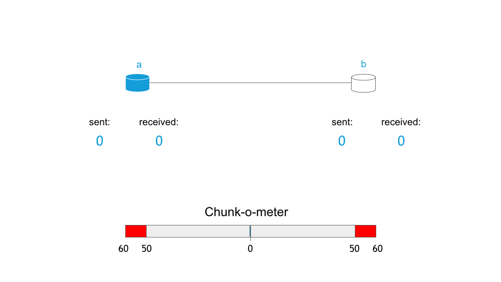

RIF Storage :The First Chunks
By Vojtěch Šimetka & Rinke HendriksenJuly 1, 2019
A few weeks ago, we published our first article on decentralized storage where we highlighted our motivation for building it and our vision. Since then, a lot has happened. Among other things, we have decided the scope of the MVP, answered crucial questions and formed a partnership with the Ethereum Swarm team to help deliver on the vision. This partnership is major: it will allow us to learn from the experiences of one of the most regarded projects on decentralized storage around, while executing simultaneously on both Swarm and RIF Storage. On this blog post, we will highlight how this partnership came about and consequently, we will give you a high-level overview on how RIF Storage works.
The Beginning of a Collaboration
As you have read in our previous blog-post, decentralized storage is of major importance for the realization of a more fair society. As this is such an important component, it is no surprise that multiple projects try to achieve this. To name a couple: IPFS, Storj, Sia, MaidSafe or Swarm. While all these projects share important differences, the common denominator is that they all try to change how information throughout the world is stored and accessed. RIF clearly has the second-mover advantage here: we were in a position where we could learn about all these interesting projects and their pros and cons (and so we did).
From this analysis, Swarm, to us, was the most promising project. It has an ingenious design, a strong vision and from all the projects, there was a very clear path to implement incentivized decentralized storage (more on this point later).
At about the same time, Swarm was organizing the Swarm Summit 2019 in Madrid. We sent our representatives Vojtech Simetka and Ale Banzas to attend the summit. Here, our conclusion was confirmed, and we gained much more clarity on the status of the project: while Swarm is well thought and defined on a theoretical level, apart from the core storage, some of the functionalities are still in research or experimental stage (e.g. the incentive mechanism). Incentivized decentralized storage depends heavily on a second layer payment solution, as micropayments are crucial to incentivizing nodes to behave in a way that is beneficial for the network. As our team has extensive experience on second layer payment solutions (RIF Payments & Lumino), we saw an opportunity to collaborate with the Swarm team and make the vision of incentivized storage a reality.
Thus, the partnership and the incentive track were born. This track, under the lead of Fabio Barone from Swarm and coordinated by Vojtech Simetka from RIF Storage, will aim to realize a minimal implementation (see: the MVP scope) to incentivized data storage, leaning heavily on the research done by the Swarm team. Additionally, the aim is to build in support for both native EVM currencies (like RBTC or ETH) and ERC20 tokens (like RIF) in the next 3 months.
RIF Storage & Swarm Basics
In this part, we would like to explain at a high level how decentralized storage (in this case Swarm) works and how incentivization plays a role. For a complete description, please refer to the official Swarm documentation.
The two main actions users expect from decentralized storage is to upload and download their files. Let’s start with explaining how uploading works. We identify the following three steps:
- Uploading the file to a node
- Preparing the file (chunking and encrypting)
- Distributing the chunks to the network
The first step is straightforward: the user connects to a running Swarm node and uploads the file,
for example using the command swarm up

These chunks are mapped into a Merkle tree which provides integrity. The image below shows how such a tree could look like:

In this tree, the leaves are populated by the hash of each chunk, while the root of the tree represents the hash of the whole file. These hashes are used in two ways: as checksums to ensure the integrity of the chunks, and to indicate their location in the network. Chunks are distributed based on the XOR distance between the addresses of the nodes and the hash of its content. Schematically, it looks like this:

The process of downloading a file follows mostly the same algorithm, but in a reversed order. The user requests a file by the root hash of the Merkle tree from the network, which then is translated in requests of chunks (leave nodes of the Merkle tree) from individual nodes. Finally, the chunks are decrypted and the file assembled.
On Incentivization
As we previously discussed, incentivization is of major importance for a network as described above. Why? Think for a second about whether you would like to have your laptop connected and on 24 hours per day, to chop through chunks and store and serve them from your hard-drive. No? Well, probably you are not the only one. Ask yourself another question: what would make you willing to serve chunks and contribute to a healthy network?
Swarm defines the Swarm Accounting Protocol (SWAP), which is a tit-for-tat system where nodes account how much data they request and serve. Basically, this means that if you request a million chunks from me, I will serve you one million chunks in return. However, there is a problem with this in a network of file storage. We expect a variability in network usage (I might stream a video for 2 hours, and leave my PC idle for the upcoming 4 hours) as well as differences in capabilities of nodes (a phone won’t be able to serve many chunks, whereas a server can). SWAP allows nodes to count their balances and, if a node requests many chunks from you, you will issue it a request for payment through a second-layer payment solution.

The SWAP mechanism shown here, where nodes send and receive chunks from each other and the balance is settled once the chunk-o-meter tilts too much to one side.
While simple in design, such a concept is very powerful for a decentralized network. As illustrated by the rise of Bitcoin and cryptocurrencies, incentives when well structured, can nudge nodes to behave in certain manners desirable for the health of the network. In this case, we expect nodes driven by profit to join the network and serve the most desired chunks from high-throughput servers, which will make the network more robust, faster and more difficult to take down. Just what we want! Additionally, such a system would also allow anybody a no-cost entry into the RSK/Ethereum ecosystem.
Next Steps
As you can see, we are busy bringing you some really cool tech. You can track our progress on the incentive board. If you are a developer, help us by picking one of the GitHub issues, with some of the research like postage or even better reach out to us and see how we can work together. See you next time when we will show you a sneak peek of the RIF Storage UI. Stay tuned!